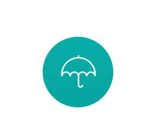
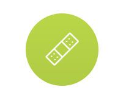
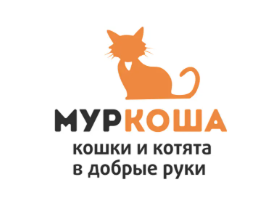
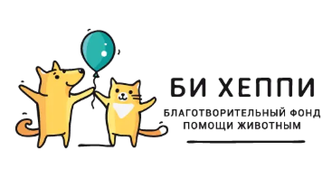
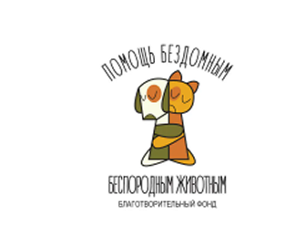

СПАСЕНИЕ
Развитие теории и идей в
дальнейшей перспективе
Каждому животному нужен дом

Развитие теории и идей в
дальнейшей перспективе

Развитие проблем и подходов
исходя из их составляющих
Развитие идей и конструктивных
задач в подходе

Каждый рубль может помочь
нам в решении задач и
осуществлении нашей миссии.
Для реализации проекта приюта
нам необходимы строительные
материалы.
Вы можете помочь нам с
распространением информации
о нашей миссии и приюте.
В любой день недели Вы
можете подарить своё
свободное время нашему приюту.
Для лечения и реабилитации нам
необходима Ваша помощь в
лекарственных препаратах.
Для того чтобы жить, нашим
питомцам необходимо
кушать.
Спасибо за Вашу поддержку!
Мы рады нашему плодотворному
сотруднечеству и вашей поддержке

МУРКОША

БИ ХЕППИ

ПОМОЩЬ
На сегодняшний день, в городе Оренбурге нет ни одного приюта для бездомных животных. Стерилизация с последующим возвращением животного в свою привычную среду обитания, как метод сокращения численности бездомышей на улицах города, не спасет их от голода, холода и человеческой жестокости.
Наша главная цель — обеспечение безопасных, комфортных условий для бездомных животных и всех жителей нашего города.